Unofficial study solution; not an official GTU answer key. Answers have not been independently verified. English text reflows; source equations, diagrams and Gujarati retain their original appearance. Use Enlarge image to inspect them.
આ બિનસત્તાવાર અભ્યાસ ઉકેલ છે, સત્તાવાર GTU જવાબવહી નથી. PDF માંથી ગુજરાતી લખાણ સાચું નીકળતું નથી, તેથી દરેક જવાબ મૂળ ચિત્રરૂપે જાળવ્યો છે. વાંચવા માટે ચિત્ર મોટું કરો. મૂળ પ્રશ્ન અને પરીક્ષાના વિકલ્પોની સૂચનાઓ અનુસરો.
Coverage: all 28 printed parts, including every OR alternative, are answered in English and easy Gujarati. The paper is 70 marks; OR alternatives do not add marks.
Questions: the original paper states English is authentic. English question wording is reproduced with only whitespace normalised; Gujarati meanings are unofficial study aids.
Methods: diagrams are schematic. Loading, support, cross-section and elastic-model assumptions are stated with each solution. Positive bending is sagging; positive shear is the net upward external force to the left of a cut.
Status: unofficial study material, not an official GTU answer key or a design certification. The original question paper is kept unchanged as a separate PDF.
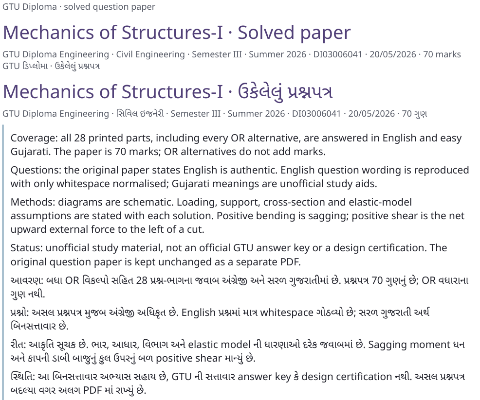
Question 1
Q1 · Stress, strain and composite columns
Q.1 (a) · Define following: 1. Hook’s law 2. Volumetric strain 3. Bulk modulus. · 3 marks
• Hooke’s law: within the proportional elastic limit, stress is proportional to strain: σ = Eε.
• Volumetric strain: change in volume / original volume, εᵥ = ΔV/V; dimensionless.
• Bulk modulus K: magnitude of uniform pressure divided by magnitude of volumetric strain, K = p/|ΔV/V|; units N/mm².
Q.1 (b) · Explain the difference between gradual load and sudden load. · 4 marks

The factor 2 assumes a linear elastic, undamped system and a step load; an actual impact or damping changes the peak.
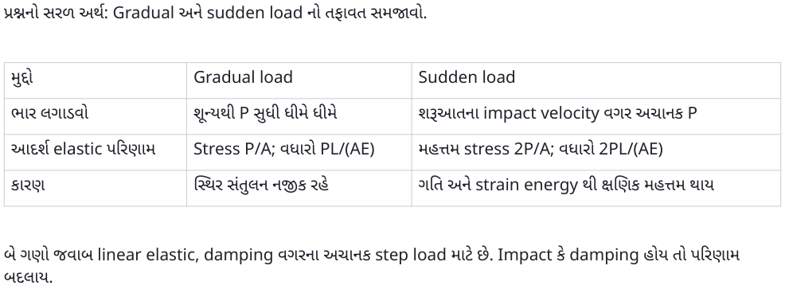
Q.1 (c) · A mild steel bar of 4m length and 18mm dia is subjected to 80 kN axial tensile load, Find out Stress, strain and total elongation of bar. Take E=2x105 N/mm2. · 7 marks
Assume a straight, uniform bar, concentric tension and linear elastic response. Convert 4 m to 4000 mm.
A = πd²/4 = π(18)²/4 = 254.469 mm².
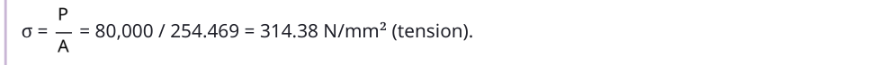
ε = σ/E = 314.38 / (2 × 10⁵) = 0.0015719.
ΔL = εL = 0.0015719 × 4000 = 6.288 mm.
Stress = 314.38 N/mm²; strain = 0.001572; elongation = 6.288 mm.
The paper gives no yield strength. If this stress exceeds the particular mild steel’s proportional limit, the E-based strain and elongation are only formal linear-elastic estimates.
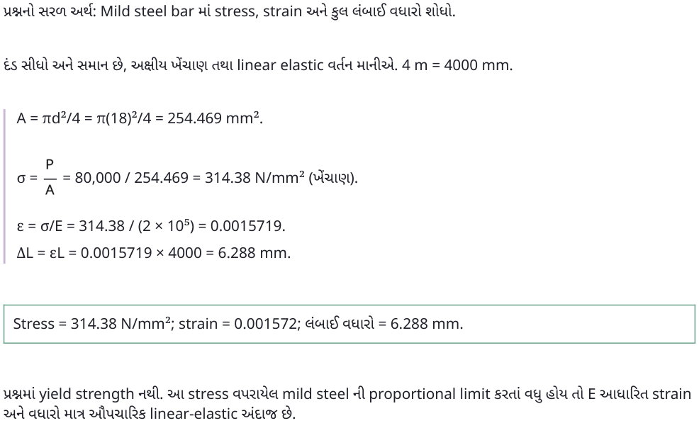
Q.1 (c) · A square R.C.C. column of 600 mm side is reinforced with 8 steel bars of 20mm diameter. The column is subjected to axial compressive force of 2000 kN. Find stress produced in steel and concrete. Take a modular ratio is 15. · OR · 7 marks
Assume concentric axial compression, perfect bond, equal axial strain and elastic material; subtract the steel area from gross concrete area.
As = 8π(20)²/4 = 2513.274 mm².
Ac = 600² − 2513.274 = 357,486.726 mm².
m = Es/Ec = σs/σc = 15.
P = σc(Ac + 15As) = 2,000,000 N.
σc = 2,000,000 / 395,185.84 = 5.061 N/mm².
σs = 15(5.061) = 75.914 N/mm².
Concrete = 5.061 N/mm² compression; steel = 75.914 N/mm² compression.
This is a short-term elastic load-sharing model, not an RCC design-strength or buckling check.
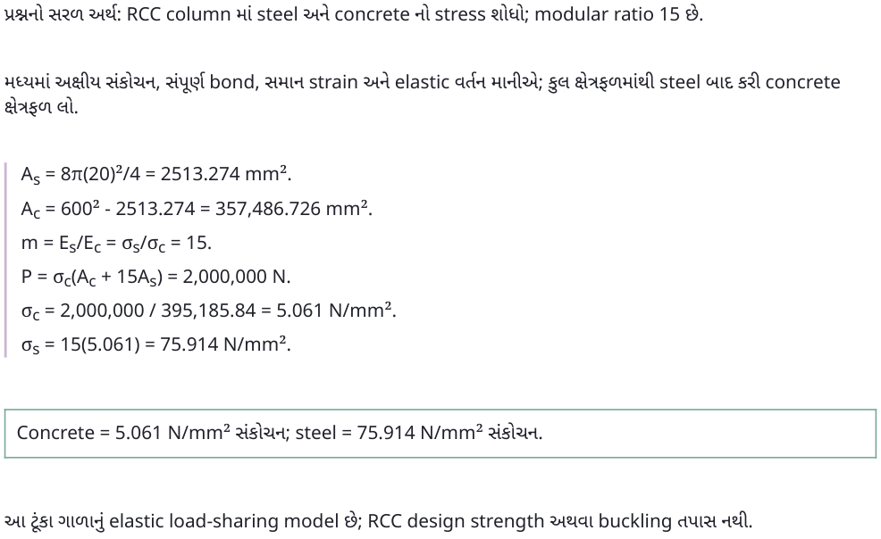
Question 2
Q2 · Inertia and beam diagrams
Q.2 (a) · Write down equations for moment of inertia for both x-x and y-y axis for following section: 1. Rectangular 2. Triangle 3. Circular. · 3 marks
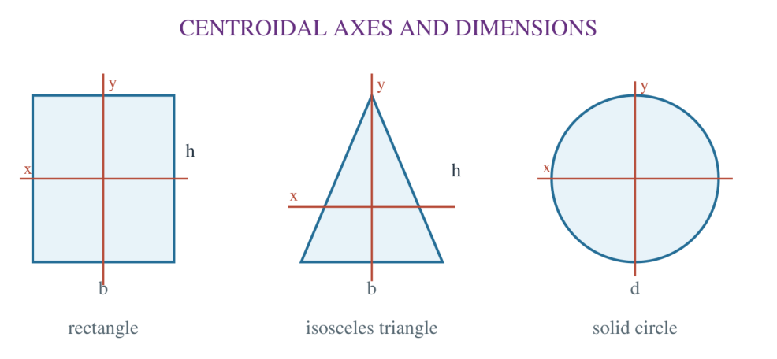
All axes pass through the centroid; x is parallel to the base.
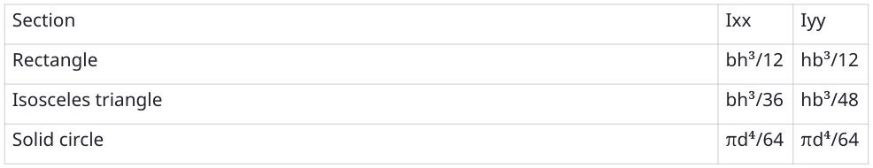
b = base/width, h = height and d = diameter. I is an area second moment, in length⁴. A triangle’s Iyy depends on its shape: for a right triangle with vertical side, centroidal Iyy = hb³/36. The paper does not specify the triangle; the table assumes an isosceles triangle.
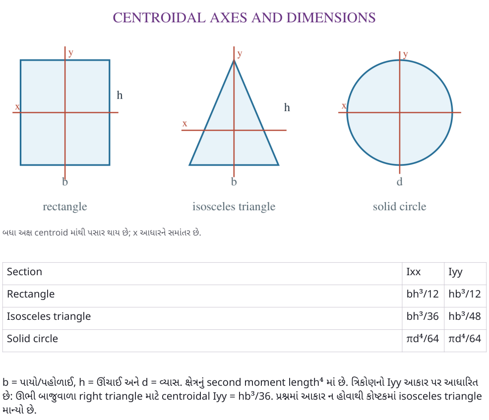
Q.2 (b) · Calculate Ixx for ISA 100x75x6mm with longer leg vertical. · 4 marks
Treat the angle as sharp-cornered rectangles without fillets. The 100 mm leg is vertical; x–x is horizontal through the centroid.
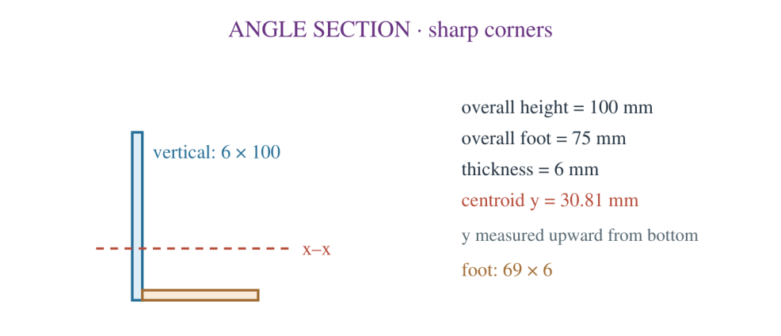
Vertical leg plus horizontal foot without double-counting their overlap.
Vertical A₁ = 6 × 100 = 600 mm²; foot A₂ = (75 − 6) × 6 = 414 mm².
y₁ = 50 mm; y₂ = 3 mm above bottom.
ȳ = (A₁y₁ + A₂y₂)/(A₁ + A₂) = 30.811 mm.
Ixx = 6(100)³/12 + 600(50 − 30.811)² + 69(6)³/12 + 414(30.811 − 3)².
Ixx = 500,000 + 220,939 + 1,242 + 320,201 ≈ 1,042,382 mm⁴ (rounded components).
Centroidal Ixx ≈ 1,042,382 mm⁴.
Manufactured ISA sections have root/toe radii and tolerances; a steel-table value may differ.
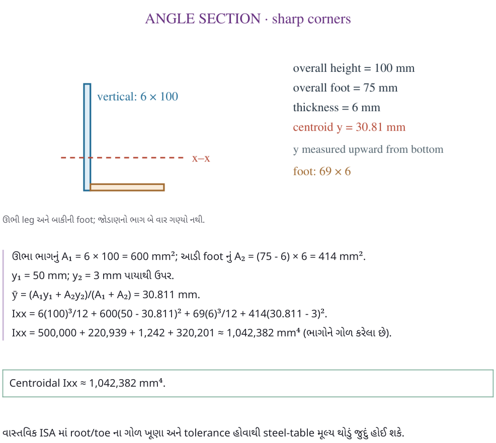
Q.2 (c) · Draw S.F.D. and B.M.D. for the beam as shown in figure.1. · 7 marks
Figure 1: take A and B as simple supports, with the 8 kN/m load over all 6 m and 4 kN at C. Let x be metres from A; sagging M is positive.
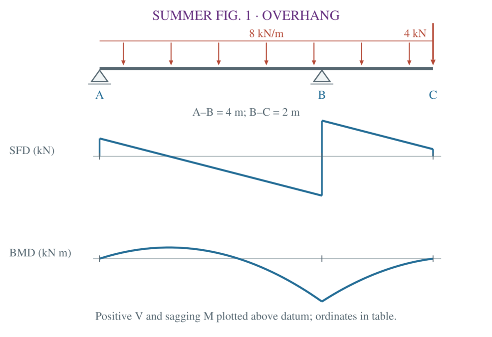
Redrawn loading, SFD and BMD: positive shear and sagging moment above the datum. The table gives exact key ordinates.
Total UDL = 8 × 6 = 48 kN, acting 3 m from A; RA + RB = 52 kN.
Moments about A: RB(4) = 48(3) + 4(6), so RB = 42 kN and RA = 10 kN upward.
0 ≤ x < 4: V = 10 − 8x; M = 10x − 4x².
4 < x ≤ 6: V = 52 − 8x; M = 10x − 4x² + 42(x − 4).
V = 0 at x = 1.25 m, giving M = +6.25 kN m. Within AB, M changes sign at x = 2.5 m.
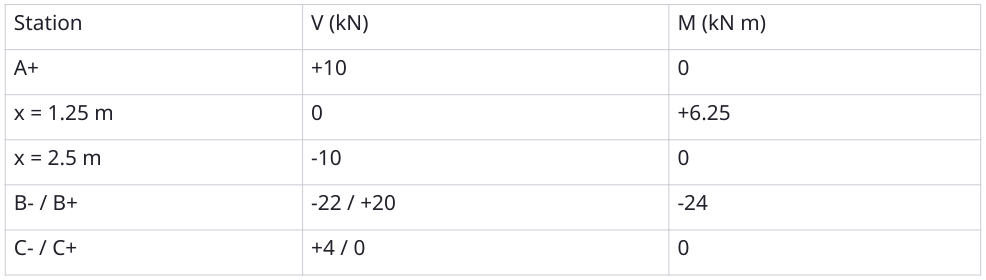
RA = 10 kN ↑; RB = 42 kN ↑; MB = −24 kN m; contra-flexure 2.5 m from A.
The SFD is linear between loads; the BMD is parabolic and remains continuous at B and C.
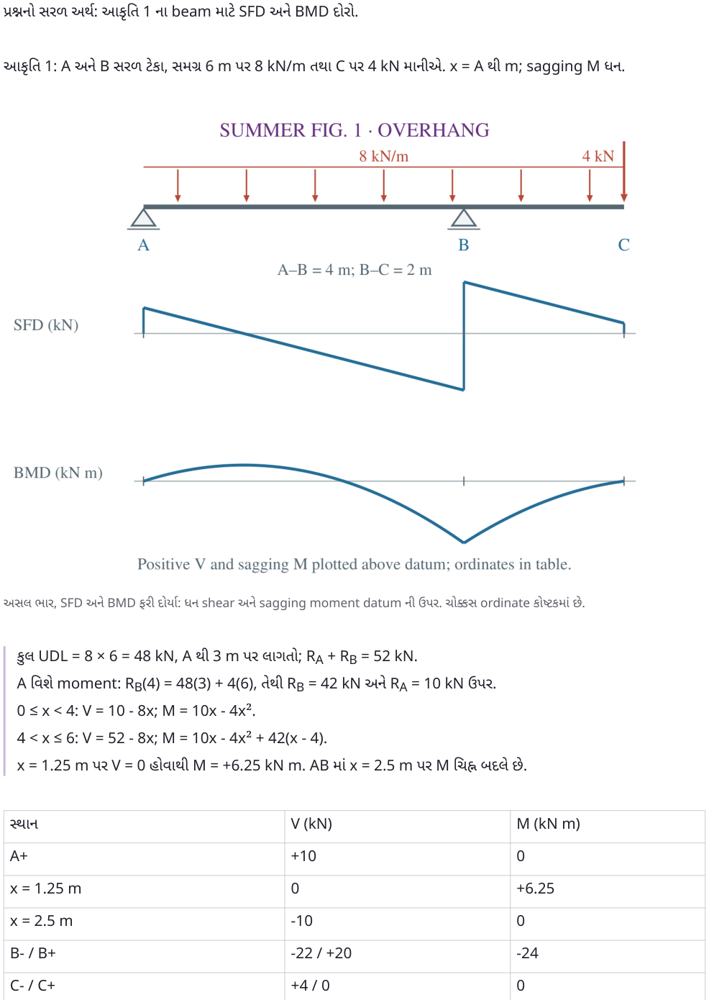
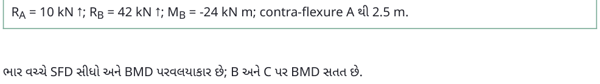
Q.2 (a) · Differentiate between centroidal axis and reference axis. · OR · 3 marks
Centroidal axis Reference axis
Passes through the section centroid.
Any chosen datum used to measure coordinates; need not pass through the centroid.
First area moment about it is zero.
First area moment is generally nonzero.
For a parallel datum at distance d, I = IG + Ad².
IG is minimum among parallel axes.
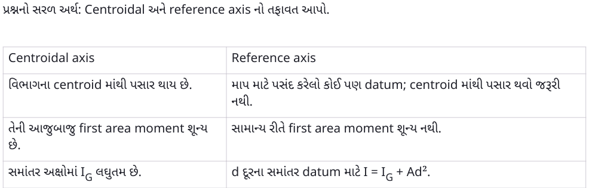
Q.2 (b) · Calculate Ixx for ISA 100x75x6mm with shorter leg vertical. · OR · 4 marks
Treat the angle as sharp-cornered rectangles without fillets. The 75 mm leg is vertical; x–x is horizontal through the centroid.
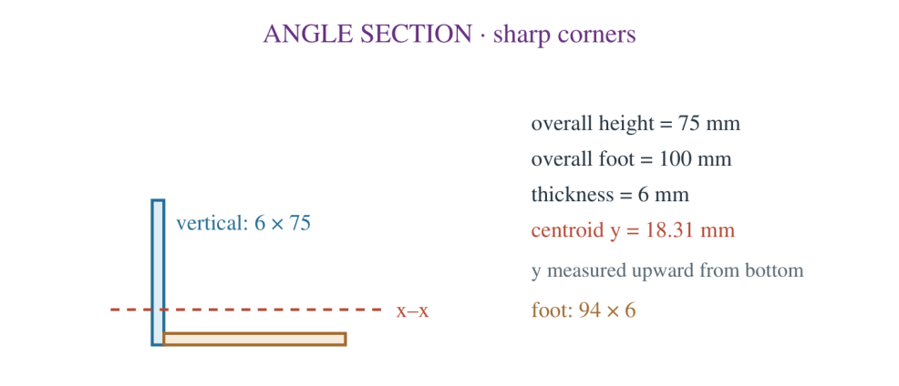
Vertical leg plus horizontal foot without double-counting their overlap.
Vertical A₁ = 6 × 75 = 450 mm²; foot A₂ = (100 − 6) × 6 = 564 mm².
y₁ = 37.5 mm; y₂ = 3 mm above bottom.
ȳ = (A₁y₁ + A₂y₂)/(A₁ + A₂) = 18.311 mm.
Ixx = 6(75)³/12 + 450(37.5 − 18.311)² + 94(6)³/12 + 564(18.311 − 3)².
Ixx = 210,937.5 + 165,704 + 1,692 + 132,211 ≈ 510,544 mm⁴ (rounded components).
Centroidal Ixx ≈ 510,544 mm⁴.
Manufactured ISA sections have root/toe radii and tolerances; a steel-table value may differ.
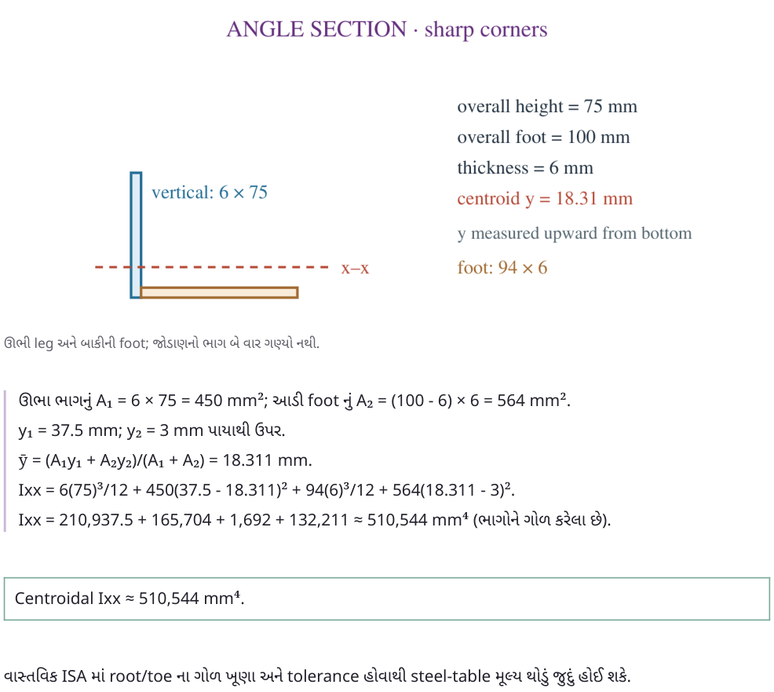
Q.2 (c) · Draw S.F.D. and B.M.D. for the beam as shown in figure.2. · OR · 7 marks
Figure 2: A is fixed, AB = 2 m has a 3 kN/m UDL and BC = 1.5 m ends with 5 kN downward. Use x from A in metres.
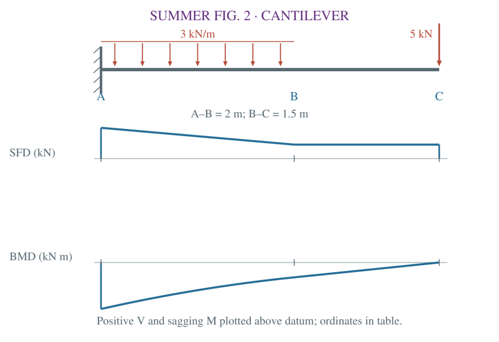
Redrawn loading, SFD and BMD: positive shear and sagging moment above the datum. The table gives exact key ordinates.
RA = 3(2) + 5 = 11 kN upward.
Support reaction moment at A = 6(1) + 5(3.5) = 23.5 kN m counterclockwise; internal MA = −23.5 kN m.
0 ≤ x ≤ 2: V = 11 − 3x; M = −23.5 + 11x − 1.5x².
2 ≤ x < 3.5: V = 5; M = −5(3.5 − x).
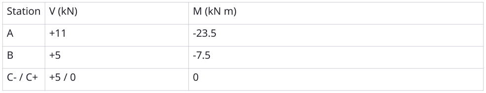
VA = +11 kN; MA = −23.5 kN m; MB = −7.5 kN m.
The moment curve is parabolic in AB and straight in BC; the end load causes the shear jump at C.
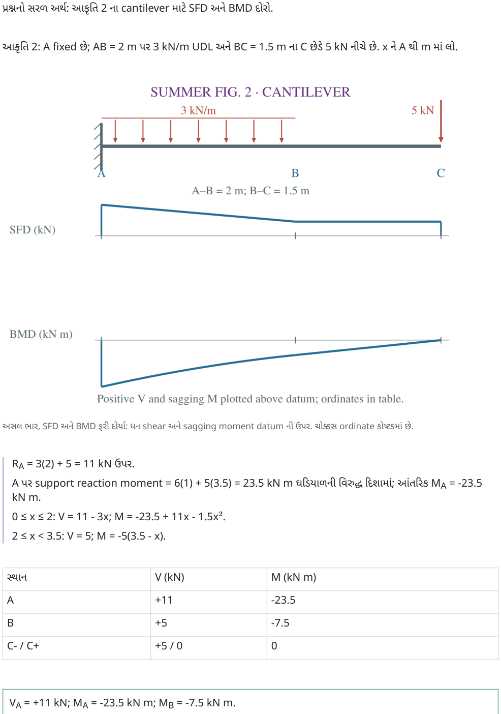
Question 3
Q3 · Beam loads and bending
Q.3 (a) · List types of beams. · 3 marks
By support condition, examples are:
• Simply supported: pin and roller.
• Cantilever: fixed at one end, free at the other.
• Overhanging: extends beyond a support.
• Fixed: both ends fixed.
• Continuous: more than two supports.
• Propped cantilever: fixed at one end and supported at the other.
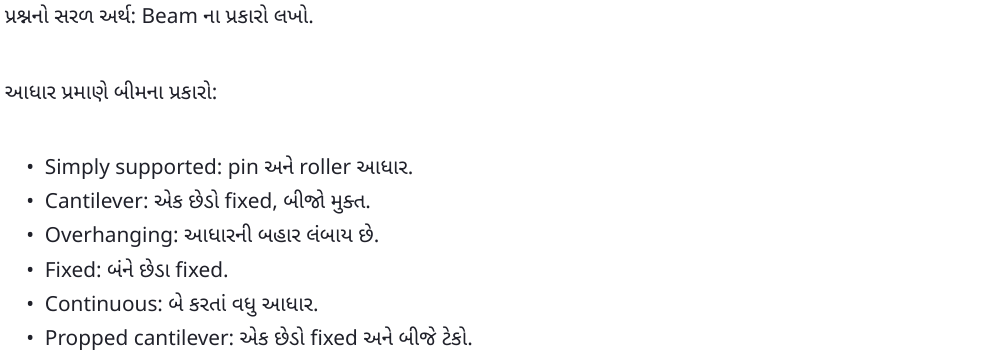
Q.3 (b) · Explain sagging and hogging bending moments with neat sketch. · 4 marks
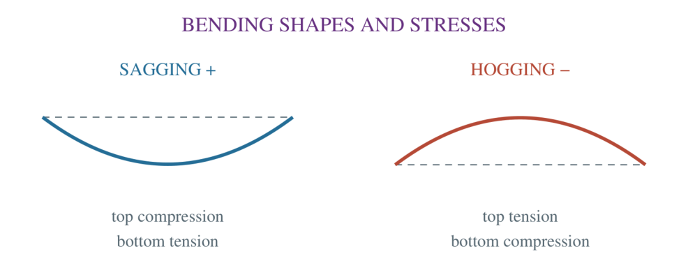
Dashed line = original axis; curved line = bent axis.
Sagging (+): the beam curves concave upward, like a smile; top fibres compress and bottom fibres stretch. Hogging (−): concave downward; top fibres stretch and bottom compress. The neutral axis has zero longitudinal bending stress.
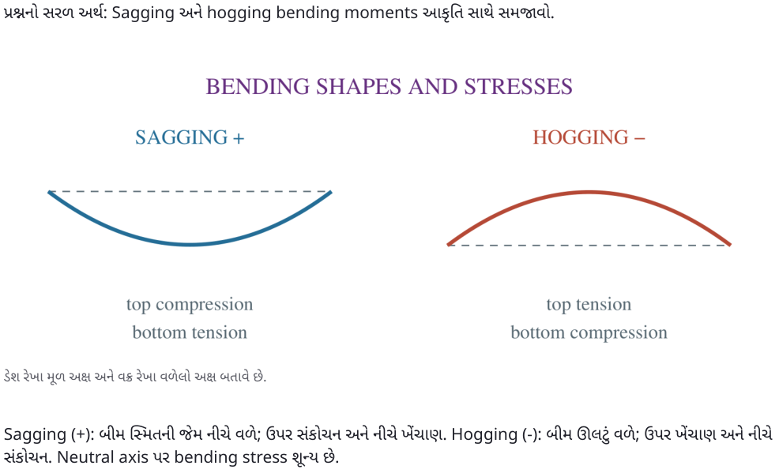
Q.3 (c) · A simply supported beam 3 m long has rectangular section 200mm x 400mm. If permissible bending stress is 18 N/mm2, find point load at centre of the beam. · 7 marks
Assume 200 mm width, 400 mm vertical depth, centre point load only, and ignore self-weight. The permissible stress limits bending, not necessarily shear or serviceability.
L = 3 m = 3000 mm; Z = bd²/6 = 200(400)²/6 = 5,333,333 mm³.
Mallow = σallowZ = 18(5,333,333) = 96,000,000 N mm = 96 kN m.
Simply supported with centre load P: Mmax = PL/4.
P = 4Mallow/L = 4(96)/3 = 128 kN.
Centre point load P = 128 kN (bending limit).
Reactions are 64 kN each; check shear, deflection and actual loading separately.
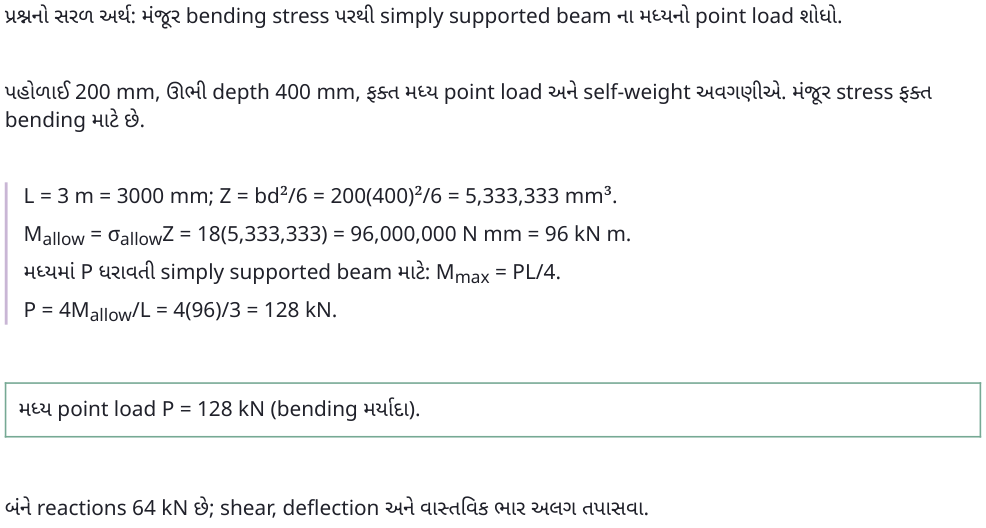
Q.3 (a) · List types of loads with figure. · OR · 3 marks
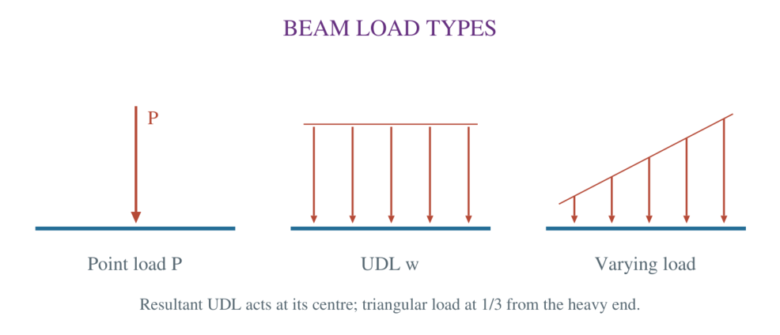
Three common transverse load idealisations.
• Point load: concentrated force P at one position, in kN.
• Uniformly distributed load (UDL): constant intensity w in kN/m; resultant wL acts at the loaded length centre.
• Uniformly varying load (UVL): intensity varies linearly; triangular resultant is wmaxL/2 at L/3 from the heavy end.
• Applied couple: concentrated moment, in kN m; it changes bending moment directly.
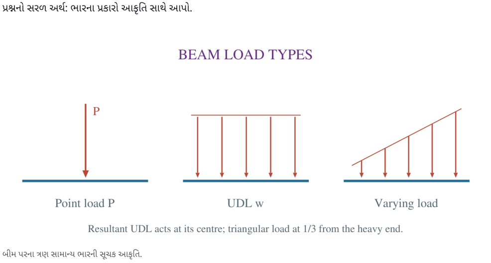
Q.3 (b) · Explain point of contra-flexure and its importance in beam design. · OR · 4 marks
A point of contra-flexure is an interior point where bending moment is zero and changes sign, so curvature changes from sagging to hogging or the reverse. A zero moment without a sign change is not necessarily one.
• Find it by setting M(x) = 0 in the correct beam interval and checking the signs on either side.
• It identifies the change in tension face and helps choose reinforcement locations and anchorage; do not cut reinforcement at that point without development-length and code checks.
• For the Summer Fig. 1 in this set, it occurs 2.5 m from A, not at a support.
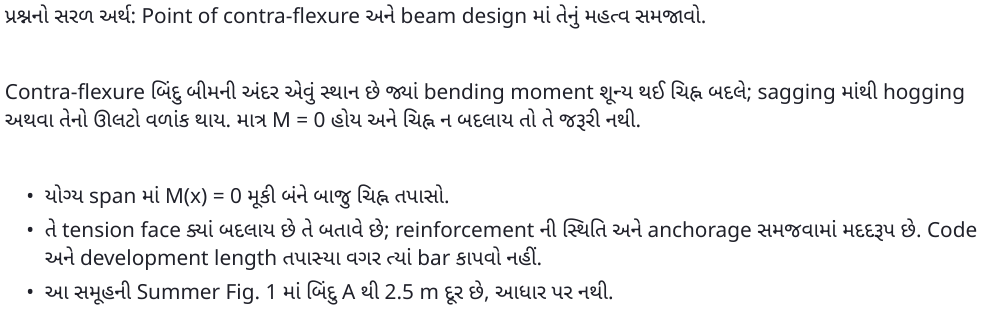
Q.3 (c) · A solid circular shaft of diameter 50 mm is subjected to a shear force of 15 kN. Find the maximum shear stress induced in the shaft. · OR · 7 marks
The printed quantity is a transverse shear force V, not a twisting moment. Use the elementary solid- circle beam shear formula.
A = πd²/4 = π(50)²/4 = 1963.495 mm².
V = 15 kN = 15,000 N; average shear V/A = 7.639 N/mm².
τmax = 4V/(3A) = (4/3)(7.639) = 10.186 N/mm² at the centroidal axis.
Maximum transverse shear stress = 10.19 N/mm².
A shaft under torque would require a different formula and a specified torque; no torque is supplied here.
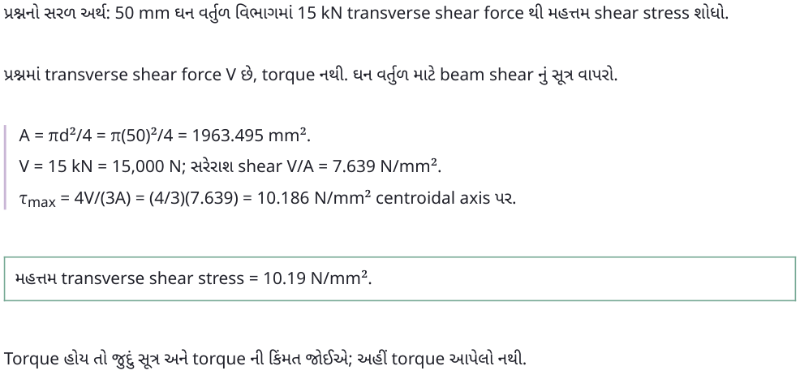
Question 4
Q4 · Shear stress and trusses
Q.4 (a) · Draw shear stress distribution diagram for the following sections. 1. Hollow rectangular section 2. L section 3. Circular section. · 3 marks
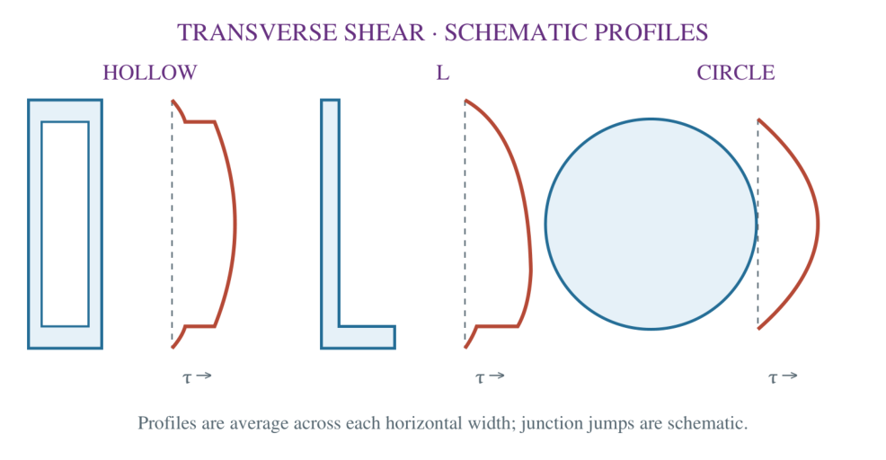
Indicative horizontal-slice average τ = VQ/(Ib); widths and proportions are illustrative.
• Hollow rectangle: zero at top and bottom, jump in average τ at flange/web width changes; symmetric maximum at the neutral axis.
• L section: unequal-width parts give a jump; the shown peak assumes the neutral axis lies in the web.
• Solid circle: symmetric parabolic average distribution, zero at the top/bottom and maximum 4V/ (3A) at the centre.
For an unsymmetric L section the actual coupled bending/shear and shear-centre effects require an unsymmetric-section analysis; the sketch is the elementary one-axis VQ/(Ib) idealisation, not a full 3- D stress field.
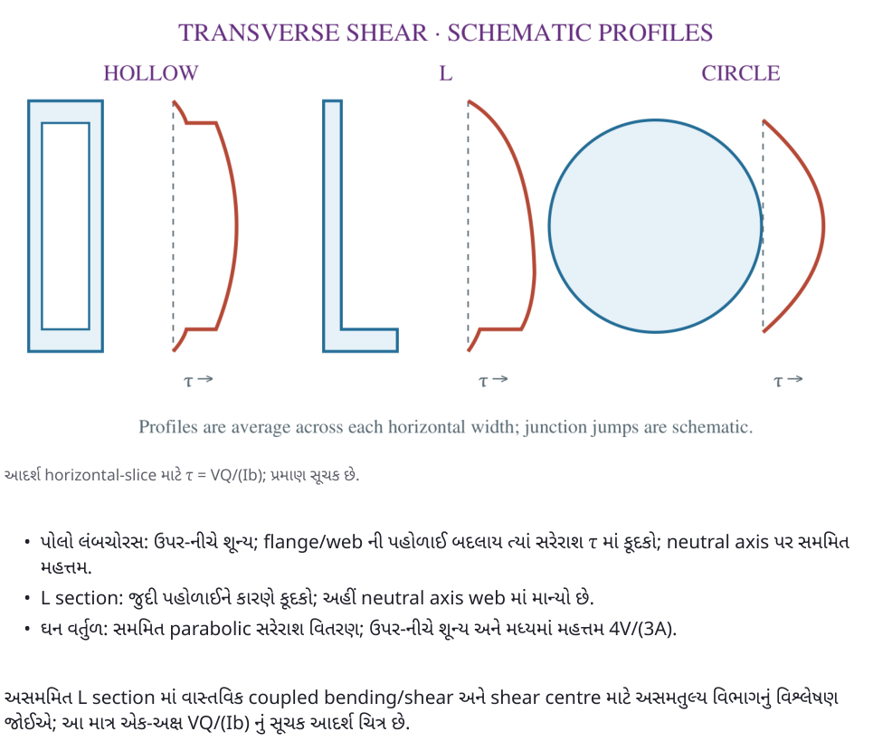
Q.4 (b) · Explain perfect, deficient and redundant trusses with examples. · 4 marks
For a plane pin-jointed truss with three independent external reaction components, let m = members and j = joints.
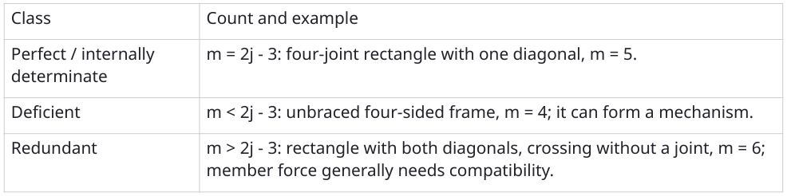
The count alone does not prove stability: geometry, joint connectivity and independent support restraints must also be checked.
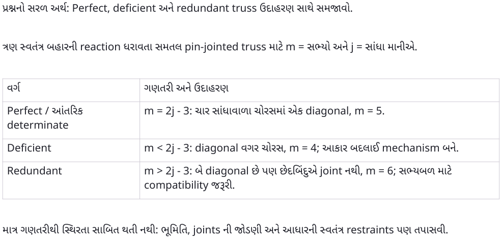
Q.4 (c) · Find forces in all members of a truss as shown in figure no.3 by method of joint. · 7 marks
Figure 3 has two 3 m equilateral panels. Support symbols are not specified: assume an A pin and B roller with upward reactions, pin joints, joint loads and negligible self-weight. Tension is positive.
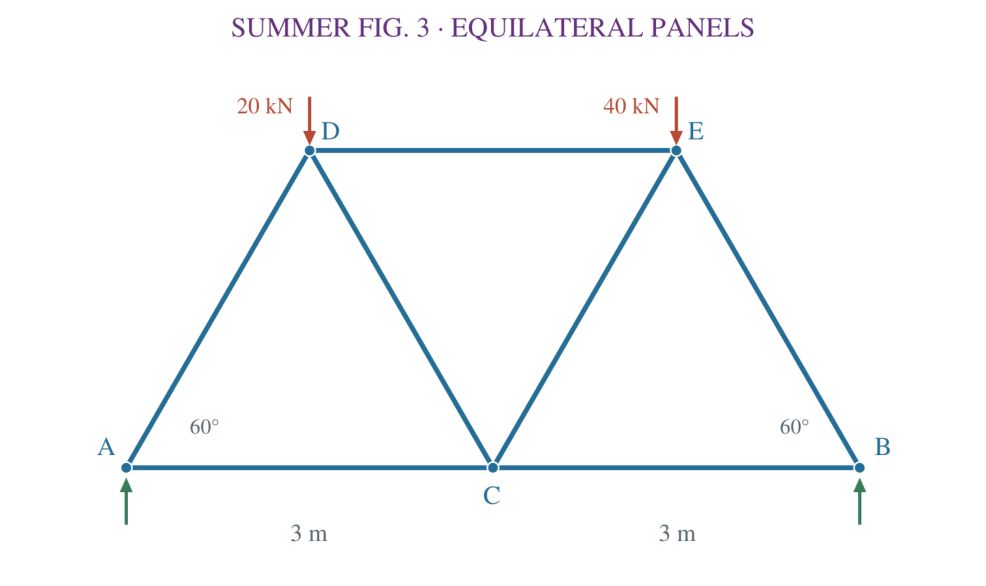
Source geometry and loads redrawn schematically; see equations for reactions and joint equilibrium.
xD = 1.5 m, xE = 4.5 m; RB × 6 = 20(1.5) + 40(4.5).
RB = 35 kN ↑, RA = 25 kN ↑, Ax = 0.
Joint A: 25 + FAD sin60° = 0; FAD = −28.87 kN; FAC = +14.43 kN.
Joint B: 35 + FBE sin60° = 0; FBE = −40.41 kN; FBC = +20.21 kN.
Joint D: 25 − 20 − FDC sin60° = 0, so FDC = +5.77 kN; horizontal equilibrium gives FDE = −17.32 kN.
Joint E: 35 − 40 − FEC sin60° = 0, so FEC = −5.77 kN. Joint C balances both components.
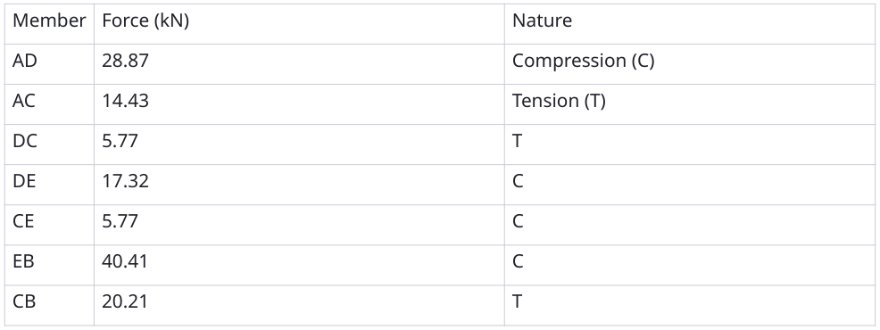
All seven member forces are listed; T = tension, C = compression.
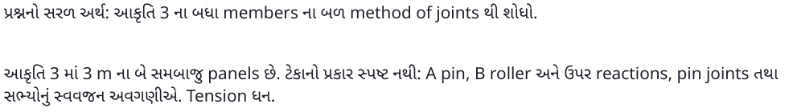
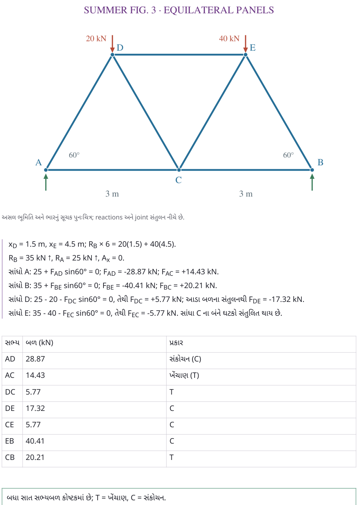
Q.4 (a) · Explain the concept of pure bending and its assumptions. · OR · 3 marks
Pure bending occurs over a beam length subjected to constant bending moment and zero transverse shear; for example, between equal and opposite end couples.
• Initially straight, prismatic member of homogeneous, isotropic material.
• Plane sections remain plane and normal to the bent axis; small strains/curvature.
• Material is linearly elastic and obeys Hooke’s law, with the same E in tension and compression.
Then M/I = σ/y = E/R within the assumed elastic regime.
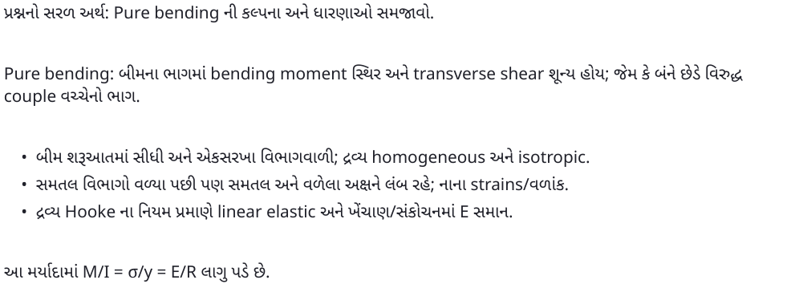
Q.4 (b) · Draw different types of trusses with neat sketches. · OR · 4 marks
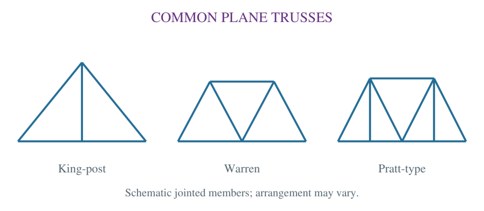
Common ideal plane truss arrangements, schematic.
• King-post: triangular roof form with a central vertical member.
• Warren: alternating triangular panels.
• Pratt-type: verticals and diagonals form triangulated panels. Actual arrangements vary.
In the ideal model, loads act at pinned joints and members carry axial force.
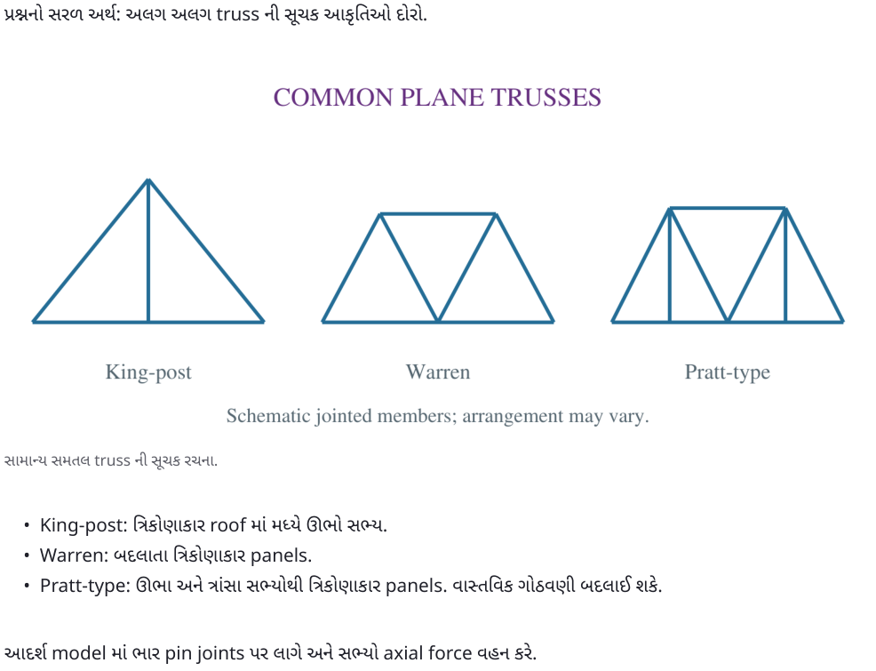
Q.4 (c) · Find forces in all members of a truss as shown in figure no.4 by method of joint. · OR · 7 marks
Figure 4: A pin, B roller, 2 m × 2 m, 10 kN right at D and 40 kN down at C. Assume pinned two-force members; tension positive.
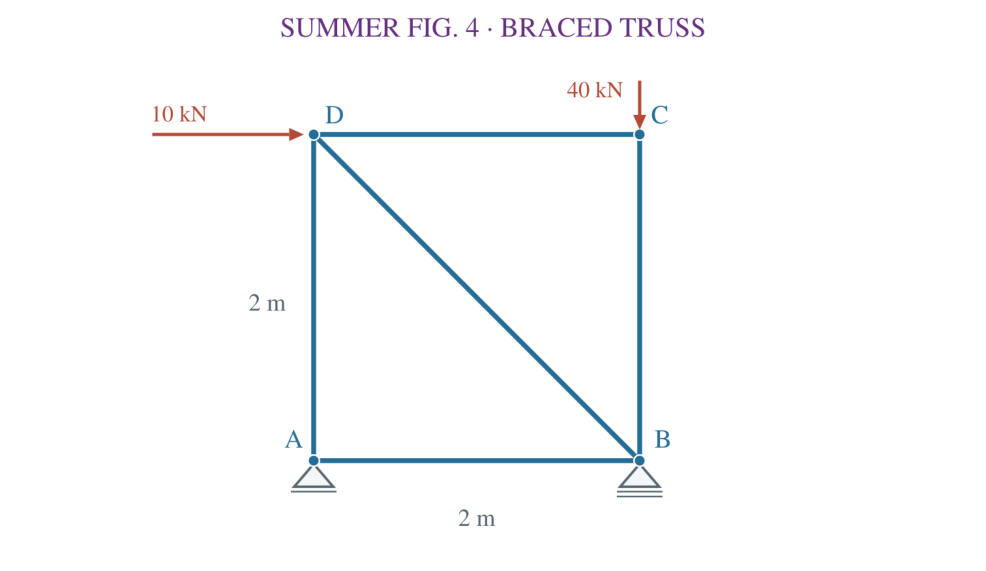
Source geometry and loads redrawn schematically; see equations for reactions and joint equilibrium.
ΣMA = 2RBy − 40(2) − 10(2) = 0; RBy = 50 kN ↑.
ΣFy = 0 gives RAy = −10 kN (down); ΣFx = 0 gives RAx = −10 kN (left).
Joint A: FAB = +10 kN and FAD = +10 kN.
Joint C: FCD = 0 and FBC = −40 kN.
Joint B: 50 − 40 + FBD sin45° = 0; FBD = −14.14 kN. Horizontal equilibrium also balances.
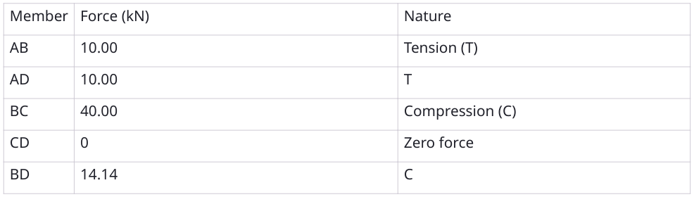
All five members solved; A reaction has a 10 kN downward component.
The negative vertical reaction at A requires a hold-down/tension-capable pin. A contact-only support would lift and this equilibrium would not describe the actual support state.
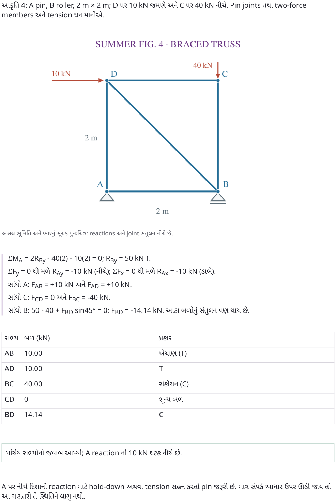
Question 5
Q5 · Deflection and columns
Q.5 (a) · Write formula for maximum deflection and maximum slope of simply supported beam with UDL over entire span. · 3 marks
For a prismatic simply supported beam of span L with constant EI and UDL w over the full span, in linear elastic beam theory:
Use consistent force and length units; E is Young’s modulus and I is second moment about the bending axis.
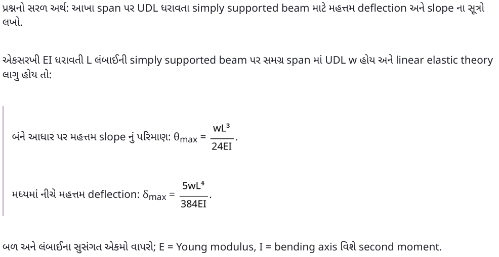
Q.5 (b) · How does flexural rigidity affect deflection of beams? Explain. · 4 marks
Flexural rigidity EI is the product of Young’s modulus E and the area second moment I about the bending axis. For linear small-deflection theory, curvature is approximately M/(EI).
• With the same geometry, loads and supports, deflection and slope are inversely proportional to EI.
• Doubling E or I halves the calculated deflection; increasing section depth can increase I strongly (rectangle I = bh³/12).
• Stiffness is not strength: serviceability and bending/shear strength must each be checked.
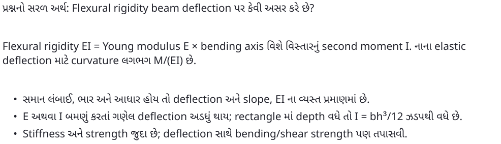
Q.5 (c) · A circular steel column having 200 mm diameter is fixed at the both ends. Using Euler’s formula, calculate safe load carrying capacity of column. Length of column is 3.6 m. Take E = 2 x105 N/mm2 and factor of safety = 2. · 7 marks
For the requested theoretical Euler calculation, assume perfect fixed ends, a solid circular section, central axial load and elastic buckling about a centroidal diameter.
L = 3600 mm; Le = L/2 = 1800 mm; E = 2 × 10⁵ N/mm².
I = πd⁴/64 = π(200)⁴/64 = 78,539,816.34 mm⁴.
PEuler = π²EI/Le² = π²(2 × 10⁵)(78,539,816.34)/(1800)² = 47,849.19 kN.
Formal PEuler/FOS = 47,849.19/2 = 23,924.60 kN.
A = π(200)²/4 = 31,415.93 mm²; r = √(I/A) = 50 mm; λ = Le/r = 36.
Euler critical stress = PEuler/A = 1523.09 N/mm².
Formal Euler/FOS result = 23,924.60 kN; this is not a validated safe design load.
The column is stocky and the formal Euler stress is very high. Steel yield/proportional strength is not given; if below 1523 N/mm², elastic Euler buckling cannot govern as assumed. Use the actual material strength, imperfections, end restraint and applicable column design code.
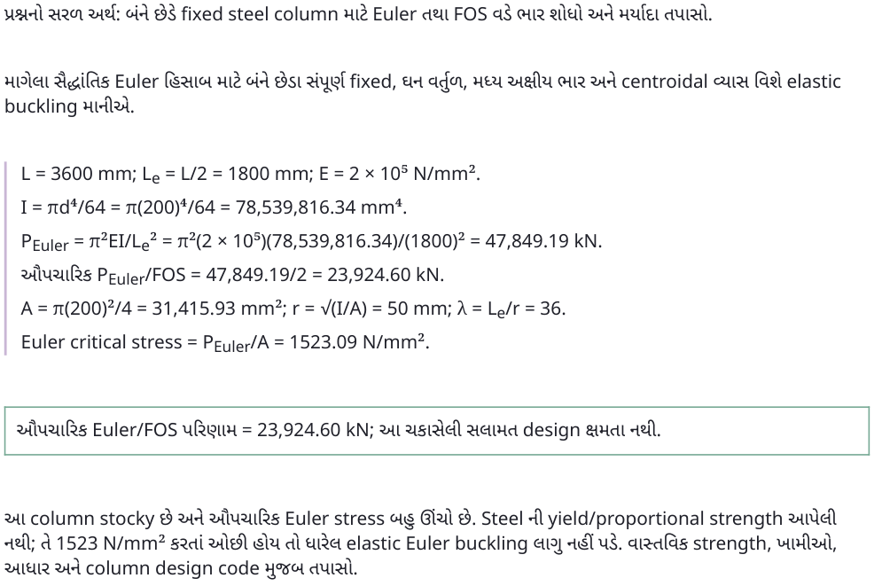
Q.5 (a) · Define slope and deflection of a beam. · OR · 3 marks

θ is rotation of the tangent; δ is displacement from the initial axis.
Slope θ: rotation of the tangent to the deflected elastic curve relative to the original beam axis; for small rotations θ ≈ dy/dx, measured in radians.
Deflection δ: transverse displacement of a point from its original position, measured in mm or m.
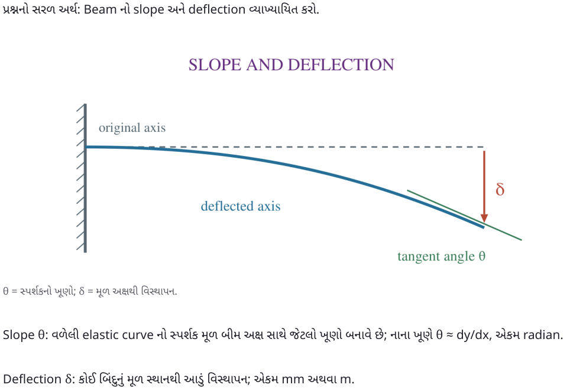
Q.5 (b) · Compare deflection behavior of cantilever and simply supported beams. · OR · 4 marks
![Q.5 (b) OR: preserved source formula, table or diagram, page 34. Extracted text context (formula notation may be incomplete): Property Cantilever Simply supported Boundary conditions Fixed end: slope and deflection zero; free end unrestricted. Deflection zero at both supports; rotations generally nonzero. Downward load Largest deflection usually at free end for downward loads. For symmetric loading maximum deflection at midspan. Free-end P: δ = PL³/(3EI). Centre P: δ = PL³/(48EI). Same L, EI and point load P](summer-2026.assets/0059.webp)
In this particular comparison the cantilever deflection is 16 times as large; different loading or spans change the ratio.
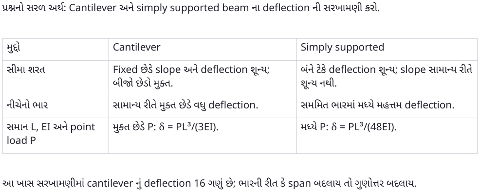
Q.5 (c) · A Steel bar of 4.0 m is fixed at both ends, Find out Rankine’s crippling load Ixx =5*107 mm4, Iyy = 3*106 mm4, A=500 mm2, fc = 600 N/ mm2 ∝=1/1800. Take factor of safety 1.5. · OR · 7 marks
Assume ideal fixed–fixed ends and use the weaker centroidal axis; the given Rankine constant is taken dimensionless.
Imin = Iyy = 3 × 10⁶ mm⁴; A = 500 mm².
rmin = √(Imin/A) = √6000 = 77.46 mm; Le = 4000/2 = 2000 mm.
λ = Le/r = 25.82; fcA = 600(500) = 300,000 N.
PR = fcA / [1 + α(Le/r)²] = 300,000/[1 + (1/1800)(2000²/6000)].
PR = 218,918.92 N = 218.919 kN; Psafe = 218.919/1.5 = 145.946 kN.
Rankine crippling load = 218.92 kN; formal load with FOS 1.5 = 145.95 kN.
Rankine is an empirical idealisation; real end fixity, eccentricity and the governing code must be checked.
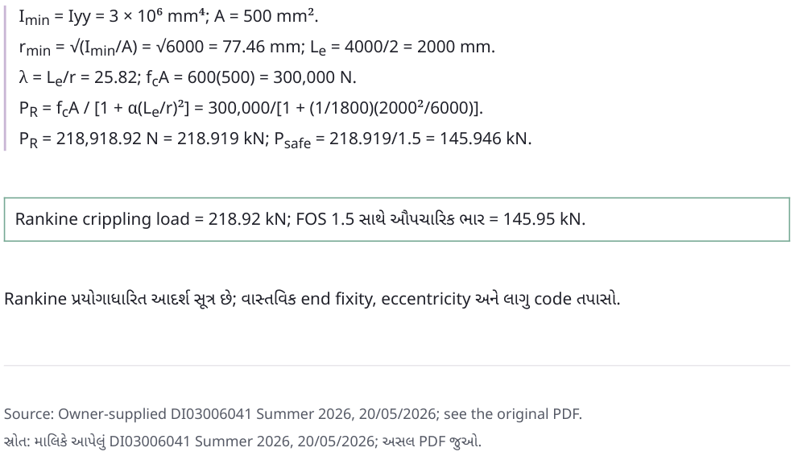